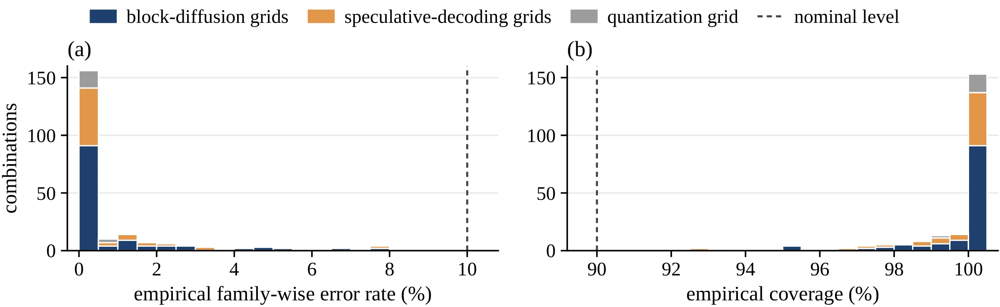

Faster Block-Diffusion Serving with Distribution-Free Risk Guarantees
arXiv preprint
1Korea University 2Zoom Communications 3Soongsil University 4Yonsei University Mirae Campus
†Corresponding authors
![Two-panel diagram. The top panel, levers inside the serving loop, shows a training-gradient box with a train lever, a pre-forward-state box with an allocate lever in which a static rule roughly equals an oracle, a forward pass of a fixed engine in which several blocks are denoised concurrently, and a post-forward-state box with a commit lever that commits every resolved block. The bottom panel, Redline as risk control outside the loop, shows a calibration set scored for answer correctness, a risk test that counts prompts where the reference is right and the candidate is wrong and applies an exact binomial test with Holm, four tested configurations of which A and B pass and C and D fail, and a box stating that the risk is within budget at the chosen confidence. An arrow labelled deploy the fastest that passes leads back to the forward pass.](assets/overview.webp)
Abstract
Block-diffusion language models are served at hand-picked operating points, such as acceptance thresholds, buffer depth, schedule, checkpoint and precision, and each point is chosen by its mean benchmark accuracy. However, a mean does not tell an operator how often a faster configuration fails on prompts that the slower one answers correctly. On the serving engine and its decode traces, the default commit rule already commits every fully resolved block, a static skip rule captures nearly all of the compute that allocation can save, and self-distillation on engine-decoded targets adds speed at unchanged accuracy. Larger speedups come from lower thresholds, which commit tokens that are still uncertain. We therefore present Redline, a finite-sample procedure that selects operating points, hand-picked or learned, from the correctness of their answers on calibration prompts. Redline keeps the reference-relative risk, the joint probability that the reference answers correctly and a candidate configuration does not, within a user-chosen budget with high probability, and deploys the fastest configuration that passes. It speeds up math at a smaller risk budget than code in both model families, and at a budget of ten percent it deploys a LLaDA2 math configuration that commits over a third more tokens in each forward. It also applies without modification to the acceptance rule of speculative decoding and to weight quantization. On the same calibration data, Redline stays within its stated failure probability, whereas each tolerance of a mean-accuracy rule either gains less speed for some model and task or exceeds the risk budget far more often for another. Code is available at https://
Measuring the Three Levers
An intervention inside the serving loop can act at three points, and each point defines one lever. The training gradient can train the model to commit more tokens in each forward, the pre-forward state can allocate forwards away from wasted slots, and the post-forward state decides which resolved tokens to commit. Each lever is measured on the engine and its decode traces against its control. Parallelism is measured by TPF, the number of tokens committed in each model forward.
-
Training lever
Self-distillation on engine-decoded targets
The model is distilled toward committing more tokens in each forward, on multi-block targets that the engine decodes with its own confidence rule. For SDAR on 256 held-out GSM8K prompts, the distilled checkpoint gains 5.2 to 5.8% TPF at every admission threshold while accuracy changes by 0.0 to +0.8 points.
-
Allocation lever
A static skip rule
In a replay of the engine's decode traces, a static rule that skips a fully masked block while an older block is still active saves 36 to 37% of FLOPs in the compute-bound regime. This lies within 1.3 points of an oracle that removes every zero-commit forward, and a learned participation gate matches the static rule to within 0.02 points.
-
Commitment lever
Default commitment is maximal
Under the engine's default commit rule, every fully resolved block preceded only by committed blocks enters the cache in the same step, and no block that is safe to commit is left waiting. This invariant is proved from the scheduler, and it holds at all 281,005 measured block-steps.
Only about two blocks stay in flight because the masked slots of deeper blocks remain uncertain. When each committing forward is re-run inside the engine's own decode traces with its unresolved predecessor finalized to its eventual tokens, in both families this flips only about 3% of the positions committed while an older block still holds masks, roughly a third of the offline rate on synthetically masked states.
![Three panels. (a) Bars of token flips on the live engine, about 3% for both LLaDA2 and SDAR, below a horizontal band for the offline synthetic rate at about 10%. (b) Step curves of deployed TPF gain on MATH-500 against the risk budget from 0.10 to 0.30. Both curves start at zero and rise in steps to about 40%, and from 0.18 on the curve with the distilled checkpoint is at about 47% while the best hand-picked curve stays at about 40%. (c) Bars of FLOPs saved for LLaDA2 and SDAR. The static rule and the learned gate both save about 36 to 37%, and the oracle slightly more.](assets/levers.webp)
Larger gains come from lower thresholds, which let the engine commit positions that are still uncertain and condition later blocks on them. A learned checkpoint thus becomes one more candidate for the serving grid, and its risk, like that of a hand-picked setting, shows only in the answers. The distilled checkpoint is served at the eight threshold settings of the SDAR math grid and tested beside the eight hand-picked configurations on the MATH-500 half of the math set, which neither the training nor the selection of the checkpoint touched. At every risk budget from 0.18 on, Redline deploys a configuration of the distilled checkpoint, with +46.7% TPF against +39.5% for the best hand-picked configuration on the same half.
Redline in Four Steps
A configuration that is faster at a fixed checkpoint accepts tokens at lower confidence, and it can fail on prompts that the reference answers correctly. Whether an answer is correct can be checked on held-out prompts after serving, and these outcomes suffice to control the risk of an operating point from outside the loop. For each candidate configuration \(\lambda\), the reference-relative risk is the probability that the reference answers a prompt correctly and \(\lambda\) does not.
\(\displaystyle R(\lambda) = \Pr_{x \sim \mathcal{D}}\bigl[\,\text{reference}(x)\ \text{correct} \,\wedge\, \lambda(x)\ \text{incorrect}\,\bigr]\)
A user who is switched to \(\lambda\) meets each such failure as a regression, whatever \(\lambda\) fixes on other prompts, and the risk also upper-bounds the net accuracy drop. The reference, the conservative baseline of each space, is the engine's default configuration, lossless verification or bf16 weights, depending on the method.
-
Step 1
Fix the grid and the budget
The inputs are a grid \(\Lambda\) of \(m\) configurations that includes the reference, \(n\) i.i.d. calibration prompts, a risk budget \(\alpha\) and a failure probability \(\delta\), with \(\delta = 0.10\) throughout.
-
Step 2
Score each configuration
Count the prompts that the reference gets right and \(\lambda\) gets wrong, \(V_\lambda\), and form the one-sided exact binomial \(p\)-value for \(H_0 : R(\lambda) > \alpha\).
\[p_\lambda = \Pr\bigl[\mathrm{Bin}(n, \alpha) \le V_\lambda\bigr]\]
-
Step 3
Test with Holm
The Holm step-down procedure at family-wise level \(\delta\) sorts \(p_{(1)} \le \cdots \le p_{(m)}\) and rejects while the inequality below holds, stopping at the first failure. The configurations whose null hypothesis is rejected are called valid.
\[p_{(i)} \le \frac{\delta}{m - i + 1}\]
-
Step 4
Deploy the fastest valid configuration
The fastest valid configuration \(\lambda^\star\) is deployed, or for quantization the one with the least memory.
The cost, whether TPF, accepted tokens for each target forward or weight memory, serves only to choose among the configurations that pass, so the guarantee attaches to \(R\) alone, and the reported TPF is that of the deployed configuration, not a guaranteed TPF.
Because Holm controls the family-wise error over all valid configurations at once, the deployed configuration satisfies
\[\Pr\bigl(R(\lambda^\star) \le \alpha\bigr) \ge 1 - \delta\]
in finite samples and without distributional assumptions, whichever valid configuration the cost selects, provided that the calibration prompts are drawn i.i.d. from the deployment distribution. Shared calibration prompts make the \(p\)-values dependent in an uncontrolled way, and Holm tolerates arbitrary dependence.
Redline needs no gradient update and no architectural change. Because nothing in it inspects diffusion internals, it needs only a reference configuration, a grid of lossy settings, correctness outcomes and a cost measure.
Where Each Task Gains Speed
Redline is applied to LLaDA2-mini and SDAR-8B on a multi-block engine, with the SDAR accept threshold made configurable, each over an accept × semi-completion grid served under a 4,096-token generation budget with greedy decoding. The reference of both families is the engine's default, accept 0.95 with semi-completion 0.90. Math is the same fixed composite in both families, GSM8K and MATH-500 with \(n = 1{,}012\) prompts, and code pairs HumanEval+ with an MBPP variant, with \(n = 542\) for LLaDA2 and 664 for SDAR. Code is scored by execution-based pass@1 and math by exact match.
| Grid | \(n\) | \(m\) | \(\alpha_{\min}\) | \(\alpha = 0.10\) | \(\alpha = 0.15\) | \(\alpha = 0.20\) | |||
|---|---|---|---|---|---|---|---|---|---|
| Gain | Δacc. | Gain | Δacc. | Gain | Δacc. | ||||
| Block-diffusion serving, TPF gain (%) | |||||||||
| LLaDA2 math | 1,012 | 7 | 0.07 | +37.5 | −4.0 | +37.5 | −4.0 | +37.5 | −4.0 |
| LLaDA2 math, large grid | 1,012 | 50 | 0.07 | +65.4 | −3.4 | +72.0 | −5.9 | +72.0 | −5.9 |
| LLaDA2 code | 542 | 8 | 0.11 | 0.0 | 0.0 | +33.7 | −7.0 | +42.4 | −13.1 |
| SDAR math | 1,012 | 8 | 0.10 | +13.1 | −2.5 | +36.6 | −4.6 | +36.6 | −4.6 |
| SDAR code | 664 | 8 | 0.11 | 0.0 | 0.0 | +25.7 | −5.0 | +59.7 | −14.0 |
Scroll sideways to see every column.
Configurations that Redline deploys at three risk budgets (\(\delta = 0.10\), Holm), with the gain over the reference in the group's cost measure and the net accuracy change in points. Below \(\alpha_{\min}\), the smallest budget at which a cheaper configuration passes, the reference is deployed. This table shows the block-diffusion rows of the paper's table, and the remaining rows appear in a later section.
In both families, math gains speed at a smaller budget than code, and at every tested budget at which code gains speed, math does too. At \(\alpha = 0.10\), the deployed math configurations already run well ahead of the reference, at +37.5% TPF on LLaDA2 and +13.1% on SDAR, with 95% intervals of 34.0 to 41.1% and 7.1 to 19.6%. Both sit about three points of empirical risk under the budget, and the SDAR math configuration also cuts the forwards of each request by 15.9%.
Code first gains speed at \(\alpha = 0.11\) in both families, and the ordering holds configuration by configuration. Each of the five configurations faster than the reference fails on 1.7 to 2.9 times as large a share of the reference's correct answers on code as on math. The large grid is a separate LLaDA2 math grid of 50 configurations over all three lossy thresholds of the engine, listed with its own reference.
Against the Mean-Accuracy Rule
A mean lets the prompts that a configuration fixes offset those it fails. The SDAR math configuration deployed at \(\alpha = 0.10\), for instance, turns a correct reference answer into a wrong one on 7.1% of prompts, nearly three times its net accuracy drop.
Redline is compared with selection by mean accuracy on the same grids and prompts. Over 1,000 random half splits of each calibration set, each rule is applied to one half and its deployed configuration is scored on the other. The exceedance is the rate at which the risk \(R\) of that configuration exceeds the budget, on the test half or pooled over all prompts. The mean-accuracy rule deploys the fastest configuration whose calibration-half accuracy is within \(t\) points of the reference's, for \(t \in \{0, 1, \ldots, 8, 10\}\).
![Two parts. (a) Step curves of deployed TPF gain against the risk budget from 0 to 0.30 for four grids. LLaDA2 math is the first to leave zero, at a budget of 0.07, and levels off near 37%. SDAR math leaves zero at 0.10 and levels off near 37%. LLaDA2 code and SDAR code leave zero at 0.11 and reach about 42% and 60%. (b) Four small panels, one for each grid, plot held-out exceedance against TPF gain for the mean-accuracy rule at a budget of 0.10, with a marker for Redline and a dotted line at 10%. On LLaDA2 math the curve stays near zero. On the other three grids it climbs far above the dotted line as the gain grows, to over 70% on SDAR math, while the Redline marker stays below the dotted line.](assets/meanrule.webp)
At \(\alpha = 0.10\), no single tolerance is both as fast as Redline on LLaDA2 math and as rarely over the budget on SDAR math. Every tolerance up to four points gains less TPF than Redline on LLaDA2 math, and every tolerance from five points up exceeds the budget in over 70% of held-out splits on SDAR math, against 3.4% for Redline.
Each ingredient of Redline is needed. Dropping the multiplicity correction raises the held-out exceedance on SDAR math at \(\alpha = 0.10\) from 3.4 to 17.5%, and dropping the finite-sample margin as well, the plug-in rule \(\hat{R} \le \alpha\), exceeds the budget in up to 64.1% of held-out splits. Testing the net drop instead of the joint risk, with the same Holm step and a betting \(p\)-value, keeps that drop within budget in every split on SDAR math at \(\alpha = 0.10\), yet its deployed configurations exceed the joint budget in 91.4% of splits against the pooled risk. Redline itself stays under 7% held-out exceedance and at or under 0.2% pooled for all sixteen pairs of grid and budget.
Speculative Decoding and Quantization
Because Redline uses only the correctness of answers and a cost measure, it applies unchanged to the acceptance rule of speculative decoding and to weight quantization, two lossy accelerations of autoregressive serving. For speculative decoding, Llama-3.1-8B with a Llama-3.2-1B draft and Qwen2.5-7B with a Qwen2.5-1.5B draft are tested on GSM8K (\(n = 512\)) under the typical acceptance of Medusa, against lossless verification, whose risk is zero by construction. For quantization, bitsandbytes int8, nf4 and fp4 weights are tested against bf16.
| Grid | \(n\) | \(m\) | \(\alpha_{\min}\) | \(\alpha = 0.10\) | \(\alpha = 0.15\) | \(\alpha = 0.20\) | |||
|---|---|---|---|---|---|---|---|---|---|
| Gain | Δacc. | Gain | Δacc. | Gain | Δacc. | ||||
| Speculative decoding on GSM8K, gain in accepted tokens for each target forward (%) | |||||||||
| Llama | 512 | 7 | 0.09 | +13.8 | −3.3 | +16.8 | −9.0 | +16.8 | −9.0 |
| Qwen | 512 | 7 | 0.04 | +18.1 | −1.6 | +18.1 | −1.6 | +18.1 | −1.6 |
| Weight quantization on GSM8K, reduction in weight memory | |||||||||
| Llama | 512 | 4 | 0.07 | 2.81× | −1.4 | 2.81× | −1.4 | 2.81× | −1.4 |
Scroll sideways to see every column.
Configurations that Redline deploys at three risk budgets (\(\delta = 0.10\), Holm), with the gain over the reference in the group's cost measure and the net accuracy change in points. Below \(\alpha_{\min}\), the smallest budget at which a cheaper configuration passes, the reference is deployed. This table shows the speculative-decoding and quantization rows of the paper's table.
For the typical acceptance of Medusa, a faster setting is deployed from \(\alpha = 0.04\) on for the Qwen pair, with a net accuracy gain at \(\alpha = 0.05\), and from \(\alpha = 0.09\) on for the Llama pair. The Llama draft agrees with the target's argmax on more tokens than the Qwen draft, 90.5% against 88.7%, yet needs a larger budget, since the risk measures whether a divergent token changes the final answer rather than how often tokens diverge.
Under quantization, all three low-precision formats are valid at \(\alpha = 0.10\), and the deployed format, nf4, reduces weight memory by a measured factor of 2.81 and peak memory during generation by 2.75.
Validity and Larger Grids
Across 12 grids and 220 combinations of grid, risk budget and calibration size, repeated random calibration and test splits give a minimum coverage of 0.904 and a maximum family-wise error rate of 0.096, and no combination exceeds the nominal level.


When Redline runs on one random half of each calibration set, the deployed configurations re-measured on the other half stay close to their in-sample gains, for instance +37.6% against +37.5% TPF for the LLaDA2 math configuration at \(\alpha = 0.10\) and +13.4% against +13.1% for the SDAR math configuration, with net accuracy changes within a point of the in-sample values.
On the separate LLaDA2 math grid of 50 configurations, 36 of the 50 configurations are valid at \(\alpha = 0.10\) and all 50 at \(\alpha \ge 0.15\). Its deployed configurations reach +65.4% and +72.0% TPF, with a held-out exceedance of 5.3% at \(\alpha = 0.10\) and none at 0.15 and 0.20, where every split deploys the same configuration. Random sub-grids deploy faster configurations as they grow, despite the stricter correction.
The guarantee is relative to the calibration distribution and to a reference configuration, so a deployment that serves a different prompt distribution or batching policy re-calibrates first. The experiments cover greedy decoding on math and code in two block-diffusion families, and Redline applies to any task with verifiable correctness. Each guarantee holds at its own level \(1 - \delta\), and several guarantees hold jointly when \(\delta\) is split across them.
BibTeX
@misc{lee2026redline,
title = {Faster Block-Diffusion Serving with Distribution-Free Risk Guarantees},
author = {Jungseob Lee and Dongyub Jude Lee and Chanjun Park and Sugyeong Eo and Heuiseok Lim},
year = {2026},
journal = {arXiv preprint},
eprint = {2609.33887},
archivePrefix = {arXiv},
url = {https://arxiv.org/abs/2609.33887},
}